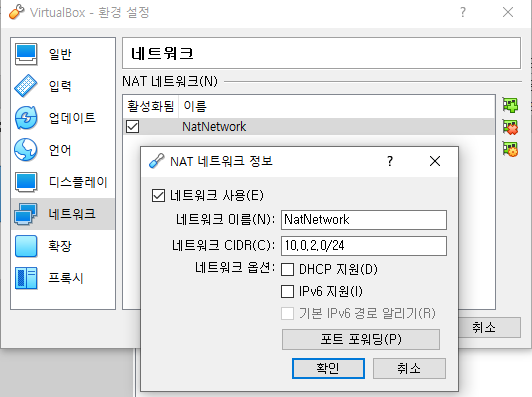
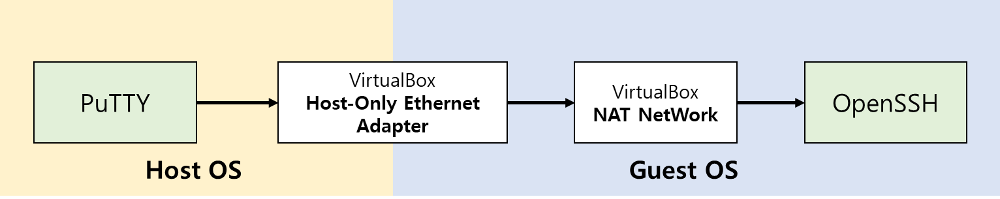
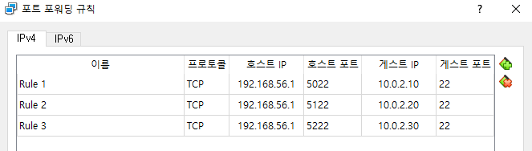
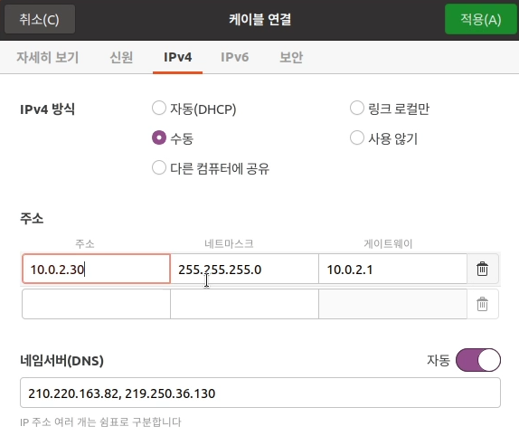
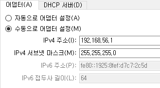

버추얼박스(virtualbox)

Contents
PC에서 서버관련 테스트가 필요해 져서
사용중이던 docker desktop을 삭제하고 virtualbox를 설치하였다.

NAT 네트워크를 생성하여 구성 (10.0.2.x)
NAT 네트워크 생성
- 메뉴 : 파일 > 환경설정 > 네트워크
만일, NAT 네트워크가 없다면 녹색+ 아이콘을 누르면 생성된다.

NAT 네트워크 정보
NAT 네트워크 포트포워딩

Host OS에서 Guest OS로 SSH연결
호스트 OS에서 NAT 네트워크로 포트 접근이 되지 않아서
VirtualBox Host-Only Ethernet Adapter를 통하여 NAT 네트워크로 포트 접근하는 방법을 사용하였다.

SSH접속을 위한 포트포워딩 설정
IP수동 설정 이후에도 SSH접속이 안된다면
- Guest OS의 방화벽 정책을 점검해봐야 한다.
- 방화벽에서 SSH(22)포트를 허용했는지 확인해야 한다.
게스트OS 네트워크 설정

Guest OS에서 IP 수동 설정
아래표와 같이 설정을 하고, IP주소는 직접 입력한다.
| 항목 | 값 |
|---|---|
| IP | 10.0.2.x |
| Subnet | 255.255.255.0 |
| GateWay | 10.0.2.1 |
| DNS | 210.220.163.82, 219.250.36.130 |
호스트 네트워크를 통한 구성 (192.168.56.x)
호스트 네트워크 관리자 설정
- 메뉴 : 파일 > 호스트 네트워크 관리자
- VirtualBox Host-Only Ethernet Adapter 가 없으면 만든다.
- 어댑터 탭에 주소 확인

어댑터 탭에 주소 확인
- DHCP 서버 체크 해제
가상머신 네트워크 설정
- 메뉴 : 네트워크 항목에서 어댑터1,2 사용하기 체크
- 어댑터1 - NAT설정

NAT설정 확인
- 어댑터2 - 호스트 전용 어댑터

호스트 전용 어댑터 확인
가상머신 OS에서 네트워크 설정하기
고정 IP를 지정해 줄 어댑터를 구분하기 위해서 하드웨어 주소를 기억해야 한다.
어댑터2 - 호스트 전용 어댑터에서의 MAC 주소는 08:00:27:5E:23:30 이었다.
-
수동설정,
192.168.56.10으로 설정
192.168.56.10 으로 설정
-
설정 결과

설정 결과
-
게스트 OS에서 인터넷 연결 체크

인터넷 연결상태 확인
-
호스트에서 ping 테스트

ping 테스트
버추얼박스에서 mariadb 운영하기
50-server.cnf 파일 수정하기
vi /etc/mysql/mariadb.conf.d/50-server.cnf
50-server.cnf 파일 수정할 항목
port = 3306주석해제bind-address = 127.0.0.1주석처리
수정이 끝났으면 MariaDB 서비스 재시작 또는 reboot 실행
우분투 방화벽 해제 명령
sudo ufw disable
우분투 포트허용 명령
sudo ufw allow 3306